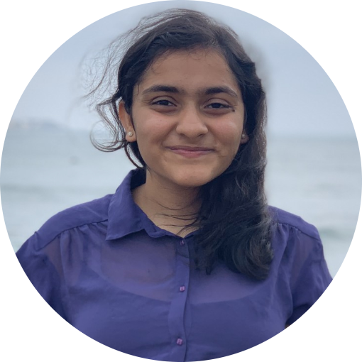

|
Kshama Nitin Shah
I am a second year masters student at the University of Michigan, majoring in Signal Processing and Machine Learning. I'm also currently working as a Research Assistant advised by Andrew Owens . My research focuses on Computer Vision , Machine Learning and Deep Learning.
I completed my undergraduate degree in Electronics and Communication Engineering from BITS, Dubai.
Email /
CV /
Github
|

|
|
Research
My research interests lie in developing 'self-supervised' computer vision models that learn from multimodal sensation specifically natural language and cross modal image data.
|
|
|
Self-Supervised Object Detection with Multimodal Image Captioning
Course Project, EECS 545, Machine Learning, Winter 2022 , Advisor :Honglak Lee
Report
/
Poster
/
Code
We propose a novel self-supervised method to generate pseudo bounding box and pseudo object class labels by prompting an image captioning model which was further finetuned using the FCOS object detection model.
|
|
|
Language Supervised Vision Pre-Training for Fine-grained Food Classification
Course Project, EECS 598-008, Deep Learning for Computer Vision, Winter 2022 , Advisor :Justin Johnson
Report
Performed zero-shot transfer by pre-training a scaled down image captioning model using a RegNet-X-800 MF and a 2-layer transformer
Achieved a 20% top-5 classification accuracy for the downstream task of fine-grained food classification
|
|
|
A Monocular Local Mapper for Urban Scenes
Course Project, EECS 442, Computer Vision, Fall 2021 , Advisor :Andrew Owens
Report
Developed a model to perform object detection, semantic segmentation and depth estimation simultaneously using a U-Net, YOLO-v1 and MobileNet-V3 feature extractor.
|
|
Graduate Teaching Experience
|
|
{kind=link}
{kind=link}